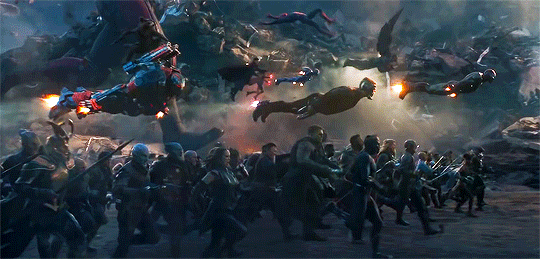
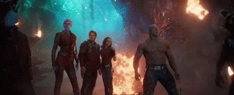

The MCU has over 30 heroes in its roster! Let's take a look at the main groups of superheroes:
The Original Avengers

The Avengers were a group of superheroes brought together by the evil Asgardian Loki's assault on New York. The group later also took down the villainous AI robot Ultron.
The original group consisted of Iron Man (Tony Stark), Captain America (Steve Rodgers), Thor Odinson, The Hulk (Bruce Banner), Black Widow (Natasha Romanoff) and Hawkeye (Clint Barton).
The New Avengers
The New Avengers consist of superheroes on Earth recruited after Loki's attack on New York. This extended group was split into into two factions as a result of the events of Captain America: Civil War, but reunited against Thanos in Avengers: Infinity War and Endgame.
This included Scarlet Witch (Wanda Maximoff), Vision, Falcon (Sam Wilson), Spider-Man (Peter Parker), War Machine (James Rhodes) and Ant-Man (Scott Lang).
The Guardians of the Galaxy
The Guardians of the Galaxy is a classic rag-tag group of space travellers that reluctantly teamed together when they were all imprisoned in space. After their escape, they worked together to thwart multiple cosmic villains like Ronan the Accuser and Ego the Living Planet.
The team consists of Star Lord (Peter Quill), Gamora, Rocket Raccoon, Groot, Drax the Destroyer, Mantis, Nebula.